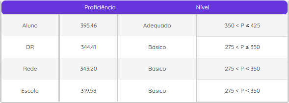

Nota da avaliação do passe do segundo trimestre.
Em grupos de 3 ou 4 integrantes vocês devem pensar em uma pergunta simples que gostariam de responder referente a algum tema, cujas respostas podem ser coletadas de colegas de classe, amigos ou familiares.
Acessar Atividade